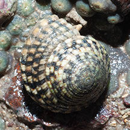
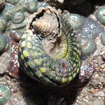
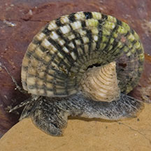
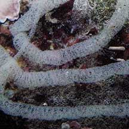

|
|
| shelled snails text index | photo index |
| Phylum Mollusca > Class Gastropoda > Family Architectonicidae |
| Variegated
sundial snail Heliacus variegatus Family Architectonicidae updated Sep 2020 Where seen? The snail with a unique operculum is sometimes seen on our Southern shores. Features: Up to 2cm in diameter. Shell thick and coiled to form an overall conical shape. Coils have a beaded texture, colours usually alternating dark and light. The operculum is conical with regular grooves and resembles a drill! Body mottled with long tentacles. What does it eat? It feeds on zoanthids and is said to be always found in close association with zoanthids. Baby sundials: It lays long egg strings. |
 St John's Island, Feb 13 |
 Operculum is conical and resembles a drill. St John's Island, Feb 13 |
 St John's Island, Feb 13 |
| Variegated sundial snails on Singapore shores |
On wildsingapore
flickr
|
| Other sightings on Singapore shores |
 |
|
Acknowledgements Links
References
|